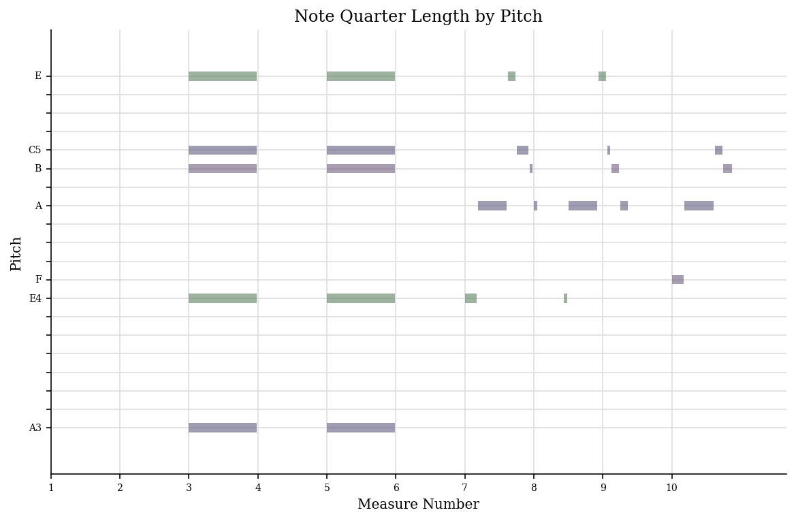
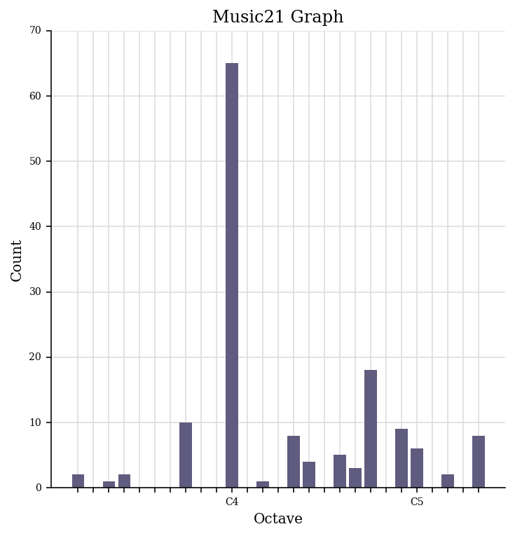

| Week 1 | Week 2 | Week 3 | Week 4 | Week 5 | Week 7 | Week 8 | Week 9 | Week 10 |
Presented in a table are the features I chose to be analysed in my jSymbolic report, a short description about these features (according to the jSymbolic Manual) & the values that were generated. To access the extracted data in a CSV file, please click here
| Feature Name | Feature Explanation | Feature Value |
|---|---|---|
| number of pitches | how many unique pitches occur atleast once in the piece | 14 |
| number of pitch classes | how many pitch classes occur atleast once in the piece | 8 |
| range | difference between the hightest and lowest pitch | 26 |
| strong tonal centres | number of isolated peaks in the pitch histogram | 1 |
| mean pitch | mean MIDI pitch value, averaged across all pitched notes in the piece | 65.82 |
| mean pitch class | mean pitch class value, averaged across all pitched notes in the piece | 6.393 |
| most common pitch | MIDI pitch value of the most frequently occuring pitch | 69 |
| most common pitch class | the pitch class that occurs most frequently compared to other pitch classes | 9 |
| interval Between Most Prevalent Pitches | absolute value of the difference between the pitches of the two most frequently occurring pitches | 2 |
| pitch variability | standard deviation of the MIDI pitches of all pitched notes in the piece. Provides a measure of how close the pitches as a whole are to the mean pitch | 6.768 |
| most common melodic interval | number of semitones corresponding to the most frequently occurring melodic interval | 4 |
On music21, I generated a piano roll of pitches throughout my piece. This graph can be seen below. The horizontal lines indicate time position and the veritcal lines indicate pitch.
On music21, I generated a pitch histogram to analyse which pitches are used most and least throughout my piece. From the graph below, it is clear that the most frequent pitch is between 60 and 70. This is consistent with the data extracted from my jSymbolic report in task 1, which illustrates the most common pitch as 69.
